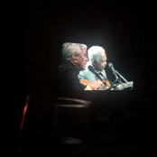

PLAYLIST PÚBLICA
144 músicas | cerca de 9h e 30min
Alceu Valença, Geraldo Azevedo, Caetano Veloso, Djavan, Adriana Calcanhoto, Raul Seixas, Belchior,
Oswaldo Montenegro, Zeca Baleiro, Ney Matogrosso, Lenine, Chico Buarque, Fagner, Zé Ramalho, Cazuza,
Tim Maia, Gal Costa, Gilberto Gil, Milton Nascimento, Elis Regina, Rita Lee, Novos Baianos, Jorge Ben Jor.>

Tuts tan
Descrição:
Vinho e MPB, quero mais oq?
Created by dory